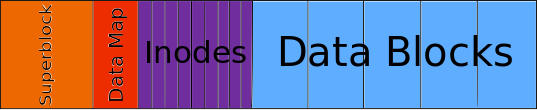

Learning Objectives#
The learning objectives for Finding Filesystems are:
- Learn how inodes are represented in the kernel
- How to write callbacks for filesystem operations
- Traverse singly indirect blocks
- Modifying permissions on files
Introduction / Backstory#
So you’ve been doing well at Macrohard. Your turbo malloc really impressed your boss and you also went on to work on the infamous password cracker and parmake programs. However, your bosses have been looking for a way to store data in a proprietary format so that they can easily share chunks of data without having to first compress it. They have the following requirements:
- The data must be stored in a single file so that it’s easy to share - however, to keep the file within the company the format must be proprietary
- Current tools like
cp,ls,touch, etc must work with this data format for easy usage
Sounds tough. That second requirement really throws a spin on things. It’s such an arbitrary requirement. Almost as if it was just thrown in as a TA’s lazy writing to motivate an MP or something. Lame!
Of course, as a student of CS241, you know exactly what they’re asking for - a loopback filesystem! After doing some research, you decide that a good filesystem to base your implementation off of is minixfs. Your friendly coworkers have already made some progress on this project and created a filesystem wrapper, fakefs, That can load a mininxfs image. It’s now your job to implement a few filesystem operation for minix.
In this MP, you will be implementing several callbacks to file system operations, namely, chmod, chown, read, and write. To do this you will be exploring how metadata is stored in the inode and how data is stored in the data blocks. You will also be exploring the idea of virtual filesystems and how they can be used to present metadata about a system.
minixfs#
ext2 is good filesystem, but to keep things simple, we will be using a modified version of its predecessor (the MINIX filesystem) in this MP.
Superblock
typedef struct {
uint64_t size;
uint64_t inode_count;
uint64_t dblock_count;
char data_map[0];
} superblock;
The superblock stores information like the size of the filesystem, the number of inodes and data blocks, and whether those data blocks are being used. Remember from class that inodes become free when their hard link count reaches zero, but data blocks need some kind of bitmap or sentinel to indicate if they are being used. data_map is a variable-sized array that holds this information. You don’t need to worry about these abstractions, they are taken care of for you.
Inodes
typedef struct {
uid_t uid;
gid_t gid;
uint16_t mode;
uint32_t nlink;
struct timespec atim;
struct timespec mtim;
struct timespec ctim;
uint64_t size;
data_block_number direct[NUM_DIRECT_BLOCKS];
data_block_number indirect;
} inode;
This is the famous inode struct that you have been learning about! Here are a breakdown of the variables:
-
uidis the user ID of the inode owner. -
gidis the ID of the inode group (does not have to include the owner). -
modeis a bitmask. The bottom 9 bits are read-write-execute for owner-group-others. Bits 11-10 are the type of the file.(mode >> 9)corresponds to a particular type. We have given you two functions,is_fileandis_directory, that tell you whether or not the inode represents a directory or file. There are no other types in our filesystem. -
nlinkis the hard link count which is the number of directories that the file is linked to from (directories can’t be hard linked). -
atimis access time, which is the time of last access or the last time a file wasread(2). -
mtimis the last modification time, or in other words, the last time the file was changed withwrite(2). -
ctimis the last change time, or in other words, the last time the file’s metadata was changed. -
sizeis the size of the file in bytes -
directis an array where thedirect[i]is theith data block’s offset from thedata_root. -
indirectis the offset number (data_block_number) of a data block, which containsNUM_INDIRECT_BLOCKSnumber ofdata_block_number’s.
Data blocks
typedef struct {
char data[16 * KILOBYTE];
} data_block;
Data blocks are currently defined to be 16 kilobytes. Nothing fancy here.
file_system struct
typedef struct {
superblock* meta;
inode* inode_root;
data_block* data_root;
} file_system;

The file_system struct keeps track of the metadata, the root inode (where fs->inode_root[0] is the root "/" inode), and the root of the data_blocks.
- The
metapointer points to the start of the file system, which includes the superblock. - The
inode_rootpoints to the start of the inodes as in the picture. - The
data_rootpoints to the start of thedata_blocksas in the picture, right after the inodes. - The
data_mapkeeps track of which blocks are used and is placed at the end of the filesystem which makes it easy to resize the filesystem (although resizing is not supported by your implementation).
The inodes and data blocks are laid sequentially out so you can treat them like an array. Think about how you could get a pointer to the nth data_block.
fakefs interface#
You do not to modify or read any of the code in fakefs_src/.
To make this MP possible, we’ve developed our own userspace filesystem interface which we’re calling fakefs. Normally, filesystems are a piece of code which you load into your kernel and must provide a few things. It needs a constructor, destructor, callbacks for all system calls involving files and file descriptors within your filesystem. However, writing kernel code is a bit more cumbersome than writing normal code since you need additional security checks among other things, and can even lead to instability in your operating system. To avoid this, there are various ways to implment a filesystem in userspace. The most common (and preferred) method is to use a library called FUSE (Filesystems in USErspace). FUSE allows you to implement your file operations in userspace, but still interacts with the kernel to provide it’s functionality. While this allows you to mount the filesystem and use it like any other filesystem, there are a few reasons why we chose not to use it for this MP. A major reason is that if a FUSE callback crashes while it is mounted, it renders the mounted partition unusable and in some cases, you won’t be able to even unmount the partition without rebooting the machine. To prevent making this MP annoying and tedious, we’ve made our own way of implementing filesystems in userspace by hooking filesystem operations.
If you take a look at fakefs_src/fakefs.c you’ll see that we’ve overridden most of glibc’s filesystem operations. Note that this only hooks functions from code or programs that were either written in C or in something that compiles to C. Running a program written in assembly will not be affected by these hooks.
Note that not all programs will work with fakefs. At the least, we guarantee that ls, cat, mkdir, unlink and cp work. vim and neovim seem to work although you might run into some weird bugs using these programs within fakefs.
Helper Functions/Macros#
There are some functions that you are going to need to know in order to finish this MP.
get_inode
This function takes a string name like /path/to/file and returns the inode corresponding to the file at the end of that path. get_inode returns NULL when the intended file does not exist or the file is invalid.
is_file / is_directory
Call is_file or is_directory on an inode to tell whether it is a directory or a file. You don’t need to consider other inode types.
is_virtual_path
Call is_virtual_path on a path to see if it’s a path in the virtual component. If it is, this function will return a path relative to the virtual directory. Returns NULL otherwise.
minixfs_min_blockcount
Call minixfs_min_blockcount to ensure that an inode has a certain minimum number of data blocks directly, or indirectly associated with it.
NUM_DIRECT_BLOCKS
NUM_DIRECT_BLOCKS is the number of direct data_block nodes in a single inode. The indirect array has only this many entries (for the sake of simplicity).
UNASSIGNED_NODE
You may not need to use this macro, but if you choose to, then any data_block or inode that is not currently being used will have this number.
Other useful functions
It’s also a good idea to read through minixfs.h and `minixfs_utils.h to get an idea of what tools we provide you with.
So what do I need to do?#
You will need to implement the following 4 functions
int minixfs_chmod(file_system *fs, char *path, int new_permissions)int minixfs_chown(file_system *fs, char *path, uid_t owner, gid_t group)inode *minixfs_create_inode_for_path(file_system *fs, const char *path)ssize_t minixfs_read(file_system *fs, const char *path, void *buf, size_t req, off_t *off)ssize_t minixfs_write(file_system *fs, const char *path, const void *buf, size_t count, off_t *off)
And you will need to implement a virtual file /virtual/info. For more information about that scroll down to the virtual filesystem section.
You can find more information about the required functions in minixfs.h. Remember to set errno on errors in your code!! We will be checking errno while grading.
Note that for all functions where you need to update times, you should use clock_gettime(CLOCK_REALTIME, variable_to_update);.
Some notes on minixfs_create_inode_for_path#
Since we’ve had many students ask about this function, this section will contain some hints.
Note that the parent directory of a path passed in will always exist when we test your code.
When you find an unused inode, you will need to use init_inode to initialize
it.
Writing the string generated by make_string_from_dirent should follow the same
logic as writing any buffer to disk. (Hint: Maybe minixfs_write can be used for
this. Be careful to not cause an infinite loop in doing so, since in some cases,
minixfs_write may want to create an inode first.)
The number of bytes written by calling make_string_from_dirent will be equal to
FILE_NAME_ENTRY as defined in minixfs.h
Virtual Filesystem#
In order to quickly get meta-information about the filesystem, we’re going to implement a virtual filesystem. Virtual filesystems are filesystems that present file-like objects, but don’t provide access to data in the traditional sense that you would expect from a filesystem. Some examples are procfs (usually mounted at /proc) that gives a user information about running processes, and also has some special files that can control various system parameters or provide debugging information about a running machine, or devfs (usually mounted at /dev) that provides information about devices and presents some virtual devices such as ‘dev/zero, /dev/random and /dev/null` which have special actions when being read or written to.
The virtual filesystem we will be baking into our mininxfs implementation will live at /virtual with respect to the root of your minix filesystem. There will be at least one file inside, info. You do not need to implement writing to /virtual/info, but do need to support read. When read from, /virtual/info will return a string with the following format:
Free blocks: [number of free blocks]
Used blocks: [number of used blocks]
Note that there is a new line at the end of each line above. You will need to compute the number of free and used blocks to insert into the data. Also note that you will need to support reading the virtual file from an offset, and must not copy more bytes to the user’s buffer than requested (just like a normal read).
To simplify your implementation we recommend first generating the data above as a string and then copying a certain number of bytes of the string from a desired offset to the user buffer.
Testing#
Testing is ungraded, but highly recommended
You can grab the test filesystem using make testfs. Do not commit this file. If you overwrite it and want the original version just rm test.fs and do make testfs again
You will probably want to reset your test.fs file frequently while testing your write functionality.
Note: There’s a small chance that make testfs can fail - in this case rm test.fs and make testfs again.
make will generate the minixfs_test executable that you can use for testing. We strongly recommend writing your own testcases in minixfs_test.c and not just on the output of commands like ls and cat (which we describe how to test with below). This is because subtle bugs in your code can make the output look right, but have random unprintable characters as well.
The goodies directory is also included and can also be used to check against the /goodies directory in test.fs.
For example, the output of:
./fakefs test.fs cat test.fs/goodies/hello.txt should be the same as cat ./goodies/hello.txt
Here are some sample (and not comprehensive) testcases!
$ ./fakefs test.fs cat test.fs/goodies/hello.txt
Hello World!
$
You can even cat directories!
$ ./fakefs test.fs cat test.fs/
you00000001got00000002ls!00000003congrats00000004 [...]
$
So that’s what really is going on under the hood?
Want something fun?
$ ./fakefs test.fs cat test.fs/goodies/dog.png > dog.png
$ xdg-open dog.png
You can store anything on filesystems. See what we hid around the testfs filesystem for you…
You can also test by generating your own filesystems. Simply run ./fakefs mkfs filename to generate a filesystem with the filename filename. If you’ve implemented the write functionality, you can use commands like ./fakefs cp file1 filename/ to copy files over. programs like mkdir should work as well.
Other Edge Cases#
- You do need to update
atimand thectim! - You don’t need to about data corruption or checksums or anything fancy, the filesystem will be valid. (Unless your write has bugs in it)
- Make sure all the files you cat out in
/goodieslook correct when youxdg-openthem. Make sure you can get the PNGs and the PDFs to print out correctly. - Make sure your output is the same size as the files inside the filesystem. You can check this by running stat on the files inside the filesystem(
./fakefs test.fs stat test.fs/FILE_PATH), and wc -c on the on output of running cat on the file (./fakefs test.fs cat test.fs/FILE_PATH | wc -c) to check that the number of bytes is the same.
Helpful Hints and Notes#
- We’ve gone ahead and compiled some info on tools you may find useful in this MP: Finding Filesystem Tools
- Handle the edge conditions. You can assume that size will be valid. What is the code supposed to do when you get to a singly indirect block?
- Draw pictures! Understand what each of the things in the structs mean.
- Review your pointer arithmetic.
-
Only change
minixfs.c.